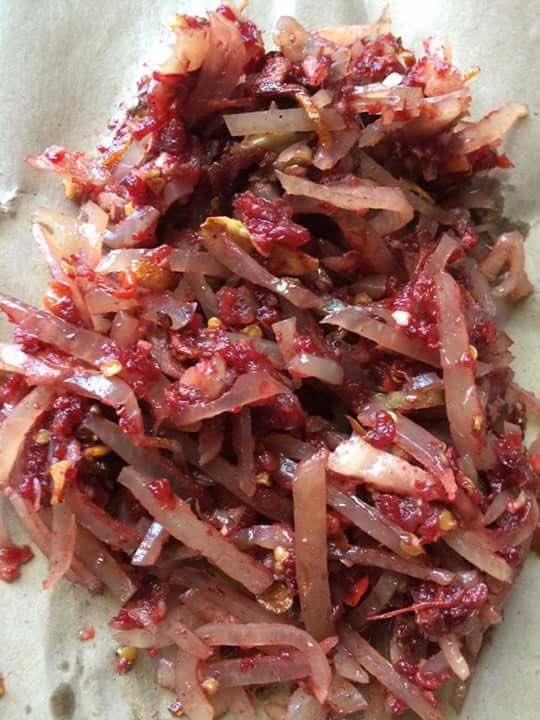

Lawar Plek

Lawar Plek is a traditional Balinese dish made with minced meat,
vegetables, and spices, often served as a side dish.
It is known for its unique flavor and is a staple in Balinese cuisine.
Lawar Plek is typically enjoyed with rice and other Balinese dishes.
This dish is often prepared during ceremonies and special occasions in
Bali.
Ingredients
- Minced meat (usually pork or chicken)
- Grated coconut
- Vegetables (such as green beans and carrots)
- Spices (including garlic, shallots, and chili)
Steps
-
Prepare the minced meat and cook it with spices until well done.
- Add grated coconut and mix thoroughly with the meat.
- Incorporate the vegetables and adjust seasoning as needed.
- Serve warm as a side dish with rice or other main courses.
Back to Recipes Home page